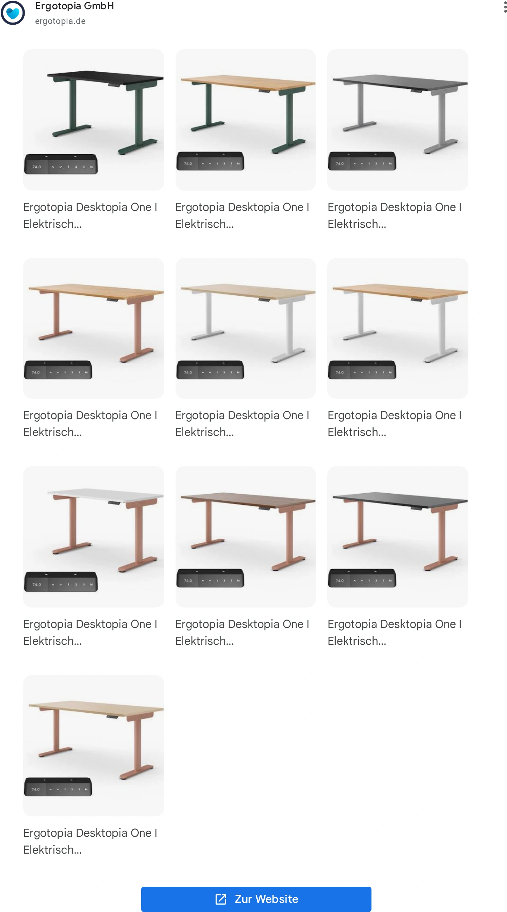
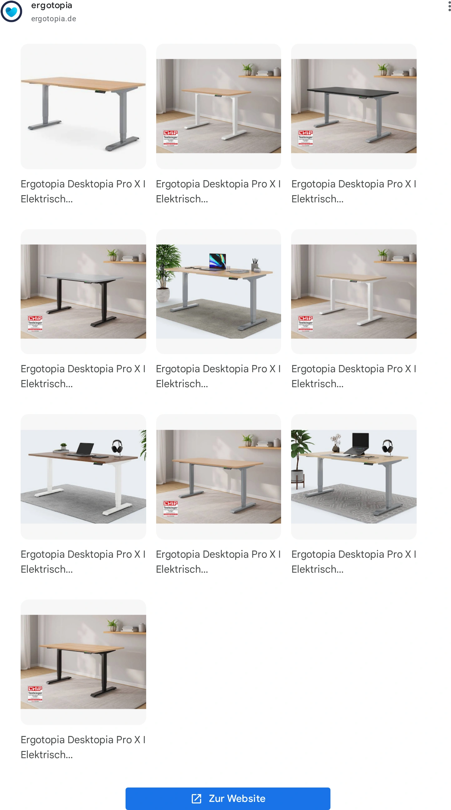
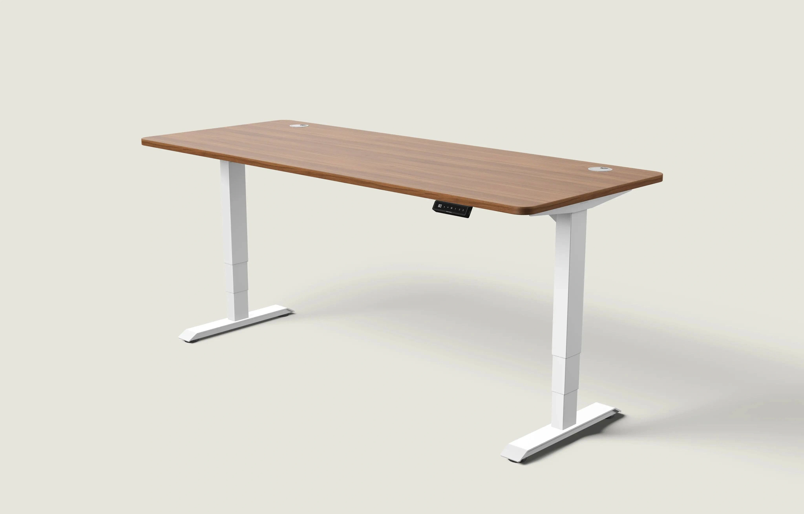

FW-C09 · 120、140还是180，按任务选尺寸
评分：92/100，排名6，Top 10 / 第一批。分项：{'product_30': 30, 'need_25': 24, 'reference_20': 17, 'difference_15': 13, 'feasibility_10': 8}。评分是测试潜力，不是效果预测。
产品：Economy Solid 白色 120×60 cm、Economy Solid 白色 140×70 cm、Dual Ultra X 白色 180×80 cm。
用户：已有购买意向但拿不准尺寸的用户。
需求：看懂不同桌面尺寸可以容纳的实际工作内容。
卖点：三种已核验在售尺寸。
机会类型：一：成熟创意的新表现。
参考什么：参考统一透视的选型矩阵与无遮挡桌面，不复制竞品SKU。
为什么：Furniwell真实变体支持尺寸比较；设备摆放是规划示意，不是适合所有人的标准。
如何差异化：固定比例和机位，分别演示单屏、单屏加资料区、双屏加资料区；不放误导性的同一张桌子缩放标签。
场景：中性浅灰棚拍空间，每一格有明确尺寸和型号名称。
构图：三列对照，长边严格按120:140:180比例，深度按60:70:80；面板与立柱按各型号官方图锁定。渠道改版：PMax版按每个尺寸分别拍一张干净单产品画面，不上传三列矩阵；尺寸放广告文字。
人物及动作：无人；配件为示意，不暗示包含在商品内。
渠道：Meta Feed主方案；Google PMax需另做干净单幅版本。比例：1.91:1、1:1。德语主题：Welche Größe passt zu deinem Arbeitstag?。
资格依据：一体桌板；单电机；两组记忆高度；白桌白架；规格区承重70 kg；高度73–118 cm不含桌板; 一体桌板；单电机；两组记忆高度；白桌白架；对应140×70在售变体; 白桌白架180×80在售变体；双电机；规格区高度60–125 cm不含桌板；多尺寸140/160/180/200 cm可选。
不能添加的宣称：描述段噪声<50 dB与规格≤55 dB不一致，创意不引用分贝；不要混用Economy拼接板。; 页面文案提到100–160 cm，但当前可选变体只核验100/120/140 cm；不把160 cm写成可售Solid。; 营销段落160 kg载荷与规格区动态120 kg/静态160 kg不同；不做重载数字广告，先复核。
证据边界：有A类实际图片参考；具体原创场景和转化效果尚待测试。图片参考体现视觉方法，不构成竞品效果数据。需求证据：P1/P2/P3；N2用于布局原则，不将小桌宣称为专业工位标准。
参考原图

ERGO-GOOG-002ERGO-GOOG-002 · Ergotopia · Google · 完整导出广告画面
原广告来源。详情日期与德国地区已核验。

ERGO-GOOG-052ERGO-GOOG-052 · Ergotopia · Google · 完整导出广告画面
原广告来源。详情日期与德国地区已核验。

DESK-GOOG-011DESK-GOOG-011 · Desktronic · Google · 真实广告内的图像组件（非完整广告版式）
原广告来源。详情日期与德国地区已核验。